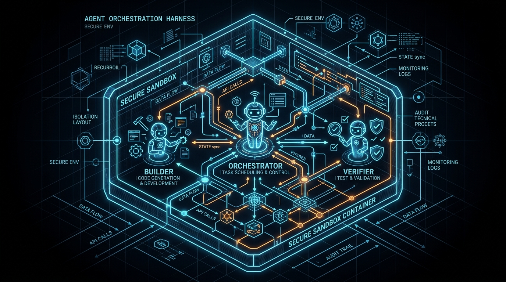
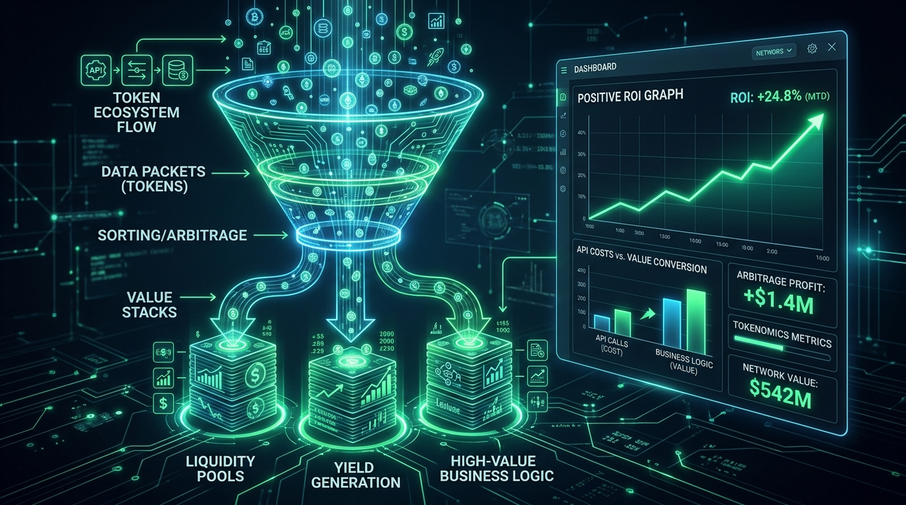

How senior software engineers can transition from manual prompting to building self-sustaining, highly leveraged AI development pipelines.
The landscape of software engineering is undergoing a tectonic shift. For the past year, many developers have engaged in what is colloquially known as "vibe coding"—interactively prompting AI assistants inside a terminal to write quick code snippets or debug minor issues. While these tools offer an initial productivity boost, they represent the floor of AI-assisted development, not the ceiling.
At the Sequoia AI Ascent, AI pioneer Andrej Karpathy highlighted a major paradigm shift: the transition to "Agentic Engineering." By the end of 2026, this paradigm will no longer be an experimental edge case; it will be the default standard for software development. The window of opportunity to be an early adopter is rapidly closing. For senior engineers, tech leads, and software architects, the challenge is clear: we must stop acting as manual prompters and start building the systems that build the systems.
This transition requires moving beyond out-of-the-box tools like Claude Code and mastering the architectural patterns that govern autonomous execution. To bridge this gap, we must focus on five core pillars: custom agent harnesses, software factories, extensible software architectures, always-on agents, and deep agentic access.
The Agent Harness:
Owning the Orchestration Layer
The agent harness is the runtime environment and orchestration layer where your autonomous agents live, communicate, and execute tasks. While default tools like Claude Code are excellent starting points, relying solely on them limits your capabilities to the constraints set by third-party vendors. If you do not own your agent harness, you do not control your engineering outcomes.
High-performing agentic engineers build custom harnesses—utilizing composable, open-source orchestration frameworks or bespoke agent runtimes—to design tailored development experiences. A custom harness allows you to:
- Build multi-agent orchestration systems with specialized roles.
- Implement strict sandbox environments for safe code execution.
- Establish model fallback routing to optimize cost and performance.
- Integrate automated verification layers to catch bugs before commit.
For instance, you can orchestrate a three-tiered agent team consisting of an orchestrator, specialized worker agents (UI generation, validation), and verification agents. By customizing the harness, you can build domain-specific agents—such as a dedicated DevOps, billing, or testing harness—that perform specialized tasks with unparalleled precision. Specialization is the ultimate competitive moat in the age of AI.

The Software Factory:
Building Systems, Not Features
A fundamental mindset shift is required to unlock true agentic leverage: senior engineers must stop building individual product features and start building "software factories." When you write code directly, your output is strictly bound by human time and cognitive limits. When you build a software factory, you are designing an AI Developer Workflow (ADW)—a structured pipeline of agents and code that coordinates to produce features on-spec every single time.
This factory begins with the "spec prompt" or "plan prompt," which is essentially a highly detailed, scaled prompt outlining the architectural expectations. The factory then coordinates planning, plan reviewing, scouting, building, testing, and automated regression fixing. By shifting your focus to the factory, your engineering output per unit of time scales exponentially.
The ultimate evolution of this pattern is Zero Touch Engineering (ZTE), where a prompt moves autonomously from specification directly to production through continuous integration and automated validation.
Designing Extensible Software
for Agentic Adaptability
Traditional, monolithic, or brittle codebases filled with cascading conditional statements are highly resistant to autonomous agents. When agents encounter complex, unorganized code, they generate "slop," introduce technical debt, and quickly exhaust their context windows.
To succeed in an agentic workflow, software must be designed to be highly extensible, pluggable, and composable. Senior engineers must strictly adhere to the Open-Closed Principle: software should be open for extension but closed for modification.
By building modular architectures with clean interfaces, dependency injection, and pluggable APIs, you make it incredibly easy for an agent to add new capabilities without modifying core logic. This adaptability is crucial because the underlying AI models, tools, and system prompts are constantly changing. Pluggable software reduces agent error rates, minimizes token consumption, and allows agents to navigate your codebase with high confidence and speed.

Token Arbitrage and the
Economics of Always-On Agents
Transitioning to "always-on" or Away-From-Keyboard (AFK) agents is the holy grail of agentic engineering, but doing so blindly leads to wasted capital. To run agents autonomously 24/7, you must master tokenomics and token arbitrage.
This economic funnel consists of three levels:
Token Maxing: Simply spending more tokens without optimization.
Useful Tokens: Optimizing prompts and workflows so that spent tokens generate tangible architectural value.
Revenue Capture: Arbitraging the cost of tokens against the business value they create.
If you pay $1.00 in API costs to generate a token sequence that produces $2.00 of business value, you have unlocked an infinite cash-generating mechanism. Once this arbitrage is established, you can scale your systems to run continuously. Your rising API bill ceases to be an expense and instead becomes a primary KPI of engineering productivity.
Agentic Access:
Eliminating the Token Tax
Agents are capable of operating hundreds of times faster than human developers, but they are bottlenecked by what they can programmatically reach. To unlock true agentic speed, you must grant your agents deep integration through CLIs, REST APIs, webhooks, database connections, and RPC clients.
Without direct programmatic access, agents are forced to perform manual, multi-step workarounds—such as reading raw text files or guessing system states—which incurs a heavy token tax. A token tax is any unnecessary token consumption resulting from a lack of direct integration.
By exposing your internal tools and deployment pipelines to your agents, you empower them to execute commands directly. While security is paramount—meaning you must run these agents in secure sandboxes with restricted bash environments to prevent catastrophic actions—the rule of thumb is simple: agents can only command what they can programmatically reach. Expose your interfaces safely to eliminate friction.
## Conclusion
The Path Forward
The gap between the top 2% of software engineers who embrace agentic engineering and those who remain stuck in terminal-based vibe coding is widening rapidly. As AI pioneer Andrej Karpathy noted, the rise of agentic workflows is reshaping the very fabric of how software is conceived, built, and maintained.
By focusing on the five pillars—owning your agent harness, building automated software factories, writing extensible code, mastering token economics, and enabling seamless agentic access—you can stack your competitive advantage and raise the ceiling of what is possible.
The transition requires upfront investment and a willingness to slow down today so you can move exponentially faster tomorrow. Stop writing the features yourself; build the system that builds the system, and secure your place in the future of software engineering.